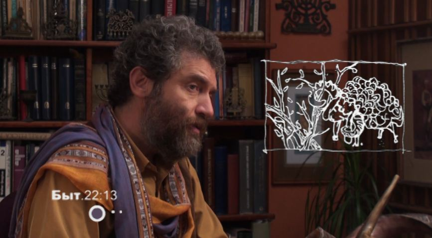
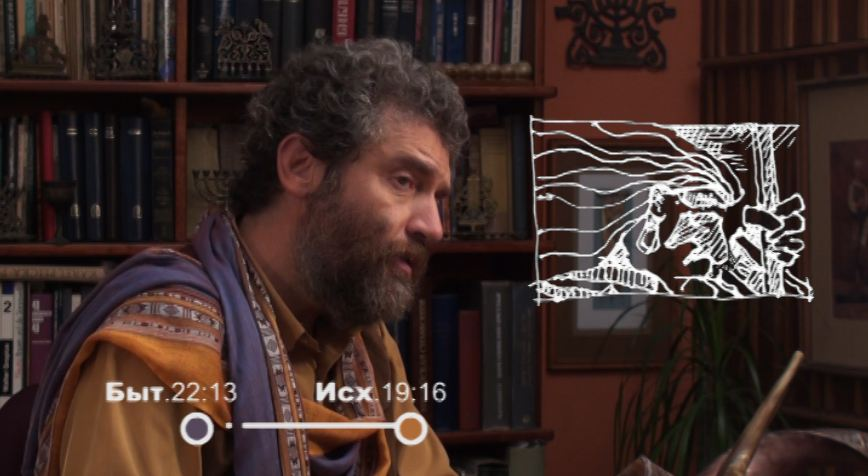
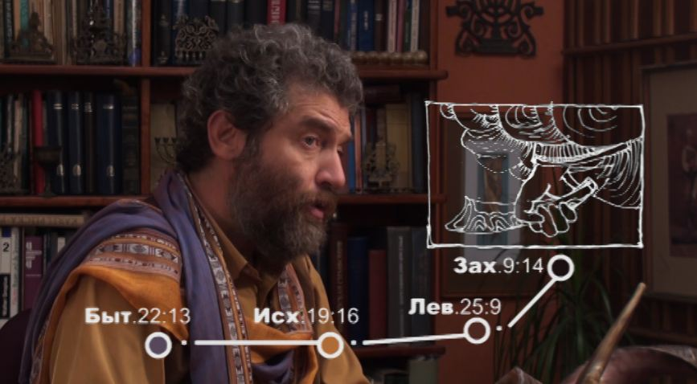

ГОЛОС ШОФАРА ч.5
Израиль - шофар в руках Творца.
В предыдущих частях мы говорили о трех именах шофара. Каждое имя несет в себе определенное пророческое действие. Каждое из них, призыв к знающему и слушающему Голос Шофара.
История шофара со времен Авраама, отца нашего и до сего дня - такова:
- Агнец, усмотренный Предвечным явился связанным в кусте пред отцом нашим Авраамом и стал заменой Ицхаку на жертвеннике. Он вознес его в жертву всесожжения - «ола», с ней вознесен был с земли и рог (керен – возвещающий призвание) (Быт.22:13).
- Израиль, стоя у г.Синай был первым, кто услышал с неба звук этого рога (шофара, призывающего к исправлению) (Исх.19:16). Сам Всевышний вострубив, передал Своему народу знание этого голоса. Отныне Он повелел трубить Израилю (Лев.25:9). Призвание Авраама и его потомков подобно рогу в руках Творца, рогу, распространяющему звук благовестия и лучу (КЕРЕН), приносящему в этот мир свет слова Всевышнего. (Призвание Авраама и потомков его можно изобразить символически. Авраам – Ицхак – Яаков (Израиль) – своим призванием, как бы составляют шофар (Авраам – начало (устье), Ицхак – ствол (труба), Иаков (Израиль 12 сынов) – раструб (корона)).




Израиль должен трубить и слушать трубление до тех пор, пока Сам Господь не вострубит вновь шофаром – Йовель (Зах.9:14), провозглашая великую свободу (юбилей) – для всех народов, для каждого, кто будет послушен Его голосу. Трубление в шофар для Израиля - не просто традиция - это его обязанность, мицва (повеление от Господа), его ответственность - научить все народы слышанью гласа Шофара.
«Блажен народ, знающий трубный зов (תרעה יהוה)! Они ходят во свете лица Твоего, Господи». (Пс.88:16) Давид Иосифон предлагает следующиц перевод: «Счастлив народ, умеющий трубить...».
Благословение: Барух ата Адонай, Элоэйну Мелех а-олам, ашер кидшану бе мицвотав вэ цивану лишмоа коль шофар. «Да будь благословен Ты, о Г-сподь наш, Б-г, Царь Вселенной, который освятил нас своими заповедями и приказал нам слушать голос Шофара», - бпаха (традиционное благословение, произносимое перед трублением в шофар).
***
Вот уже три м половиной тысячи лет звучит голос шофара.
Наши мудрецы говорят: “Звук Синая никогда не прекращается”.
С тех пор, как Всевышнй возложил на Израиль ответственность - трубить в шофар. Сам Бог трубил, затем передал ответственность трубить Израилю…
В ШОФАР ТРУБЯТ:
* при помазании царя
* в праздник новолуния
* в обличение в грехах и призыв к покаянию
* дабы вселить страх Божий
* напомнить о дне Господнем о грядущем суде
* призыв к воссоединению Израиля на его земле, в стране Израиля со столицей в Иерусалиме – вечном городе Царя.
* в напоминание о приходе Машиаха
* при воскресение мёртвых: «Вдруг, во мгновение ока, при последней трубе… мертвые воскреснут нетленными…» (1Кор.15:52).
* «будет в тот день: Господь потрясет все от великой реки до потока Египетского, и вы, сыны Израиля, будете собраны один к другому; и будет в тот день: вострубит великая труба (יתקע בשופר גדול), и придут затерявшиеся в Ассирийской земле и изгнанные в землю Египетскую и поклонятся Господу на горе святой в Иерусалиме. (Ис.27:12-13)
«Сам Господь при возвещении, при гласе Архангела и трубе Божией, сойдет с неба, и мертвые во Христе воскреснут прежде…». (1Фесс.4:16)
***
Нередко можно услышать мнение, что шофар – не муз. инструмент!?
Музыка - это не только созвучия, гармонии, пассажи, но, прежде всего, образы, ощущения, откровения ею рождаемые. Это, то, что потрясает в шофаре и том звуке, который он из себя исторгает. Он способен производить в нашей душе нечто, очень важное, пробуждать чувство трепета, благоговения пред Творцом, соединять тысячелетия, простираться из времени в вечность.
В этом смысле, шофар музыкален настолько, насколько это вообще возможно.
см. также другие части на тему "Голос Шофара":
* часть 1
* часть 2
* часть 3
* часть 4
***
см. на эту тему также мой фильм "Голос Шофара". Студия "Тора-Арт". Композитор Даниэль Круглов
***
Другие видео материалы о шофаре: исполнение заповеди трубления шофара - (см. здесь)
автор: Эфраим Калиш /TORAART/